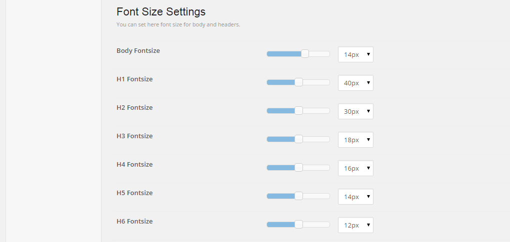
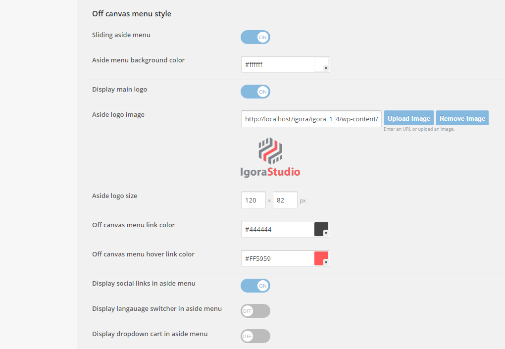
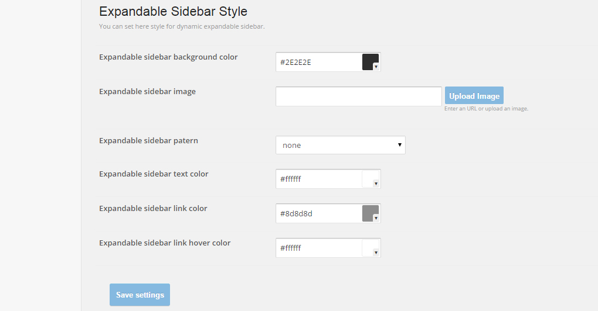
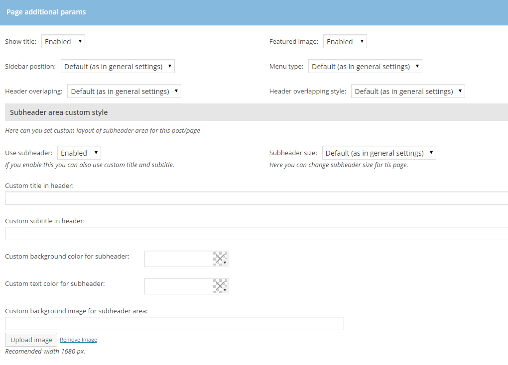
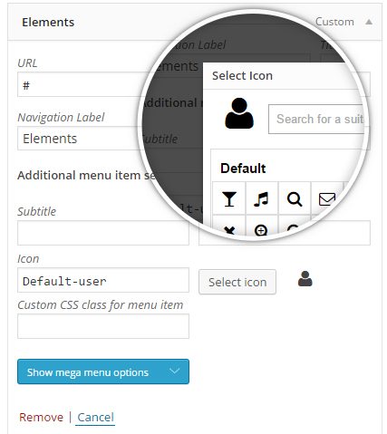
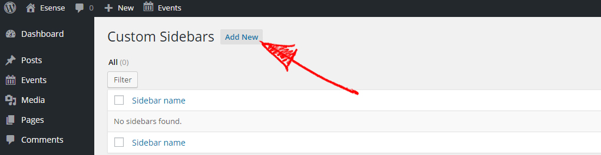
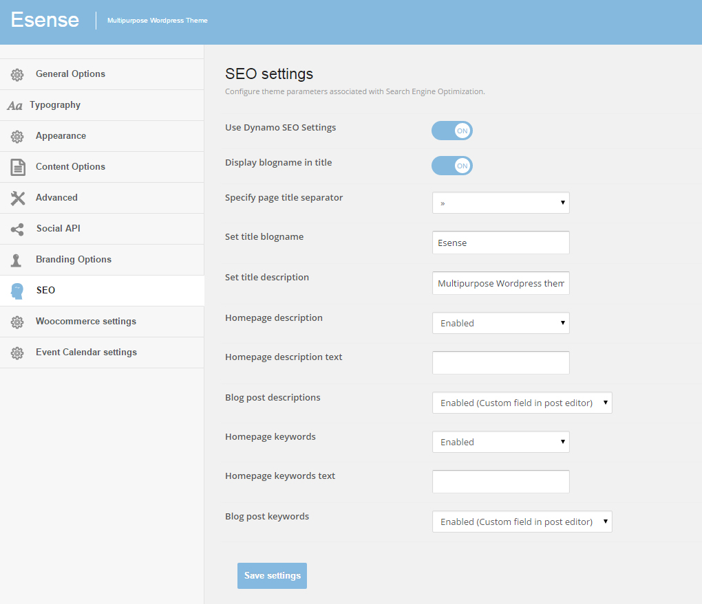

Welcome to Esense
A Multi-Concept Theme
- created: 13/04/2016
- latest update: 22/04/2016
- by: Dynamicpress
- dynamicpress.eu/
- email: studio@dynamicpress.eu
Welcome to Esense - A Multi-Concept Theme
1. Getting Started
Installing Esense
Once you've downloaded the installation file on ThemeForest, extract it and locate a file called dp-esense.zip. You can install the theme by using one of two installation methods:
-
WordPress upload - This is probably the simplest way for most users. Here are the steps you need to take:
- Login to WordPress admin
- Go to admin panel > Appearance > Themes > Add New > Upload Theme
- Click on "Choose File" and select dp-esense.zip
- Click on "Install Now"
-
FTP upload - If you wish to install via FTP, here are the steps you need to take:
- Using FTP client, login to the server where your WordPress website is hosted
- Using FTP client, navigate to the /wp-content/themes/ directory under your WordPress website's root directory
- Using FTP client, upload the Esense directory to themes directory on remote server
Install Plugins
Right after the theme was activated, a notification at the top of the screen will suggest to continue with the installation of the required and recommended plugins for getting the best our of your theme.
Esense for properly functioning required following plugins:
- Visual Composer
- Revolution Slider
- DP Eesense Functions plugin
- DP Esense Sample Data Importer
You can install recommended plugins according your needs.
Importing Demo Content
You can either start building your site from scratch, or import one of our demo sites and then modify it to fit your needs. We will now explain how to do the latter.
Esense comes with one-click import module. Here's what you need to do:
- Login to WordPress admin
- Go into DP Esense Sample Data Import plugin
- Choose the demo site that you wish to import from the dropdown menu
-
From the dropdown menu on the right, choose what type of content you'd like to import:
- All - imports pages, content, widgets, and settings. We recommend this for users who want to import pages exactly as they appear in the demo.
- Content - imports pages and their content only. Recommended for users who want to see how we've created our page layouts, but who want to keep their own settings in Esense Options.
- Widgets - imports widgets only. Recommended for users who'd like to use the widget areas that we created and want to import that only.
- Options - imports Esense Options only. Recommended for users who would like to achieve the same look and feel of our demo site, but who do not require our page layouts.
- Revsliders - imports settings in Revsliders only.
- Grids - imports settings of Essentials Grids only.
-
If you wish to import media files (images, videos, sounds), check the "Import attachments" box.
Please note that the images we use are copyrighted, and if you'd like to publish them on your site, you would need to purchase them separately. We bought most of our images on Photo Dune or Shutterstock.
- Click on the "Import" button.
Installing Woocommerce
If you plan on building an online shop with Esense, please read the WooCommerce section of this user guide before installing the demo content.
Upgrading Esense
You can upgrade your theme by performing the following steps:
- Download the latest theme zip file from ThemeForest
- Extract it and locate dp-esense.zip
- Extract dp-esense.zip and locate the 'dp-esense' folder
- Copy/Replace content of the 'dp-esense' folder to the /wp-content/themes/dp-esense folder of your web site.
- Revolution Slider
- Visual Composer
- DP Esesnse Functions
- DP Esense Sample Data Importer
Important F.A.Q.
1. Why can't I save my menu?
WordPress by default has a limited number of menu items. When you import our demo site, which contains a lot of menu items, you might not be able to save changes you make to a menu. You can fix this problem by contacting your hosting and asking them to add the following lines to php.ini file:
max_input_vars = 5000
suhosin.post.max_vars = 5000 suhosin.request.max_vars = 5000
2. Why is there a smiley displayed on blank pages?
This problem is most likely related to JetPack and memory settings of your hosting. You can either disable JetPack or read what the JetPack developer wrote: Regarding the memory limit, please refer to the WordPress Codex section concerning this problem. Some sites that load many plugins alongside WordPress ultimately require a higher memory limit than WordPress defaults to, but since this is limited to specific hosts and configurations, it must be dealt with on an individual basis. You'll find the Codex article at: http://codex.wordpress.org/Common_WordPress_Errors#Allowed_memory_size_exhausted
3. How do I optimize my site?
Please use this tool to investigate reasons for slow loading: https://developers.google.com/speed/pagespeed/insights/?hl=en
4. How to translate or rename default theme labels?
You can use the Codestyling localization plugin (http://wordpress.org/plugins/codestyling-localization/) to translate/rename all the theme's labels. Another solution is to edit the theme folder/languages/en_US.po file directly in editor and manually edit labels you want to translate.
5. Why do I see a white screen when importing demo content?
If you get a white screen or some other error when trying to import our demo content, this probably happens because of the maximum execution time limit. You need to increase the maximum execution time (upload time) setting of your web server. The default maximum execution time on web servers is 30 seconds. Please increase it to 120 seconds. Possible ways of achieving this are:
- By Wp-config.php changes - set_time_limit(120);
- In htaccess - php_value max_execution_time 120;
- In php.ini file - max_execution_time = 120
Ask your hosting provider to take care of this for you.
2. Theme Options Overview
Once you've installed Esense theme and DP Esesnse Functions plugin, you can start building your site. To customize the appearance and functionality of your web site to your needs you should to use Esense administrative panel .
Esense comes with robust and inteligent Admin Panel. It allows for easy and intuitive to set all aspects of appearance and function of theme. Creating your own skin has never been as easy. Plenty of options allows you to create the unique appearance of the page with a few clicks without writing a single line of code. This quick guide to the built-in Esense Admin Panel will show you how to do it.
General Options
Here you can set all general options of theme:
- Breadcrumbs display
- Sidebar position
- Theme default width
- Sidebar default width
- Default screen width for mobile devices
This settings set switch points whitch determines when custom CSS for different mobile devices are enabled. - Custom code for HEAD section
- Custom code for footer section section
- Custom CSS code
This field is very usuable for small CSS adjustments without editing core CSS files.
Typography
Here you can set all typography aspects:
- Font for body
- Font for Headers
- Two custom fonts for other elements eventually
- Default font size for body and headers
Typgraphy settings will be more detailed described further in chapter Appearance
Appearance
This is indeed skin cretor. Here you can set colour, background color, pattern, background image for all important theme areas.
You can do it using color pickers, slideers and switchers in few minutes.
Theme color scheme is based on two accent colors:
- Main accent color used for all accented elements like buttons, links etc.
- Secondary accent color used for some accented elements or hover states.
Additionaly you can select custom colors practicaly for any important theme area (header, subheader, footer)
Appearance settings will be more detailed described further in chapter Appearance
Content Options
Here you can set many content related options:
- Contact data displayed in top ba (if enabled).
- Social icons displayed in header and footer.
- Disable or enable display comments on pages
- Disable or enable display author info
- Set witch post meta data will be displayed
- Set default category and blog page layout
- Excerpts length
- Portfolio items per page
- Default portfolio page
Advanced
Here you can set some advanced theme options:
- Use widget rules.
This is very flexible feature witch allow set visibility, style for all widget individuall. More detailed is desribed bellow. - Use prefix free css
- Add Google tracking code
- Use thickbobx
- Enable or disable support for OpenGraph and OpenSearch etc.
Social API
Here you can set all social API related options:
- Enable / disable Facebook like button
- Enable / disable +1 button
- Enable / disable tweet button
- Enable / disable tweet cards support
- Enable / disable pin it button etc.

Branding Options
Here you can add some own brand to the theme:
- Change default theme name
- Change backend logo (on login screen)
- Change favicons fo all devices
- Change default logo in admin menu
- Change copyright text etc.
Woocommerce Options
This tab will be visible only when Woocommerce plugin is installed.
Here you can customize some options for Woocommerce pages:
- Enable / disable display sidebar on woocommerce pages
- Enable / disable display add to cart button on catalog pages
- Enable / disable display short descriptions on catalog pages
- Count of chars in short descriptions etc.
Events Calendar Options
This tab will be visible only when The Events Calendar plugin is installed.
Here you can customize some options for Events Calendar pages:
- Enable / disable display subheader on Events pages
- Set custom title and subtitle for Events pages subheader
- Set custom image and background color for Events pages subheader
See Instructional Videos
3. Appearance Settings
At this point, we will discuss briefly the basic aspects of the theme appearance settings. With the enhanced options panel you can set up virtually every aspect of the theme look without writing a single line of code.
Typography Settings
1. Setting font for body and headers
In Template Options -> Typography options panel you can select font family for different theme elements (body, headers and others)
As for the font family you have to choose the following options:
- Standard web fonts.
- Fontsquirel fonts.
With the theme we supply several Fontsquirel fonts (Colaborate, BebasNeue, SFNewRepublic,Liberation).Please note that you can easy add new Fontsquirel fonts. Please prepare your own webfont package using FONTSQUIREL WEBFONT GENERATOR and upload this package in to the folder wp-content/themes/dp-esense/fonts/ . Your font will be available as option by font familly setting. - Google fonts.
You can select any font available on Google Fonts. Please select font and paste Google font URL (for example: http://fonts.googleapis.com/css?family=Raleway:400,300,200,500,600,700,800 in the appropriate box.Please note that you can use any font actually available in Google Font directory. We don't have hardcoded fonts in theme. You only paste link to selected font. This solution seems to be more flexible. You can customize selected font familly (use certain font wieght and subsets for special characters, latin, cyrlic, greek, vietnamese etc). From other hand you are not limited only to hardcoded in theme font set. We decided on this way of linking Google fonts because of the greater opportunities offered in comparison to the hard coded options. You can determine what exactly font weight you will use and more importantly what character sets (latin, cyrlic, greek, vietnamese etc) you will include. This is very important for multilanguage sites.
2. Setting font for custom elements
Additionally, you can choose up to three different fonts for different elements of the page.
A font family selection you can do as described above for the body and the headers. To assign the selected font family to a specific element, enter the CSS selector in the field below. As shown in the picture example selected font is assigned to an element with CSS class digit. You can assign selected font to meny elements adding coma seprated selectors.
3. Setting font size for body and headers.
Finally in the Typgraphy panel you can determine default font size for the body and headers.

General Settings
In Appearance panel in section General Settings you can choose:
- Main accent color
- Secondary accent color
- Page background color
- Page pattern
You can select one of included in the theme patterns. You can also add own pattern uploading pattern image (in .png format) in to the folder wp-content/themes/dp-esense/images/patterns/ . Added pattern wil be automatic available in options panel. - Page background color
- Page general layout (streched or boxed)
If you select Boxed layout you will see some additional options:
- Page body background color
- Page body patern
- Page wrap border color
- Mainbody background image
Top Bar Settings
In this section you can enable or disable display of Top Bar.
If Top Bar display is enabled you can set some options.
Please note that:
- Addres, phone number and email address you can set in panel Conent Options
- Social icons set is determined by settings in Conent Options panel.
- Language switcher will be displayed only when WPML plugin is installed and activated.
- Cart button can be displayed only when Woocommerce plugin is installed and activated.
- To display user mmenu button you should assign WP menu to manu position User menu
Logo Styling
In section Appearance -> Head and Main Menu Style you can adjust logo type, size and position.
Firs of all you should select logo type:
- Defined in CSS code
If you select this logo type you can adjust logo image, size and position in CSS (in file wp-content/themes/dp-esense/css/basic.css - Image logo
This is an option selected by the vast majority of users. In this case logo adjustment can be done via options panel. Setting of Image Logo is easy and intuitive. You need only upload own logo image using apprioprate field, set logo dimension and spacing (eventualy alt text for image. Please note that that you can adjust custom logo image for sticky menu and for aside menu type you can do it in options herafter. This will be discussed later. - None
By selecting this option you can simply disable logo usage.
Main Menu Settings
In section Appearance -> Head and Main Menu Style you set also main menu type. Esense generally support three menu types:
- Menu top
This is default menu type. Menu is located on top of sites. If you select this meny type in settings further you can adjust logo position, overlapping etc. - Off canvas menu (aside menu)
This is aside, vertical menu (see example Igora Architect or Igora Photographer). - Overlay menu
This is full screen overlay menu (see example Esense Technology)
1. Top Menu Type Settings

If you select Top Menu type next step is selecting menu style and logo position.
You have following choices:
- Logo right alignment (default)
This is default option. Logo and menu are displayed inline (logo left aligned and menu right aligned). - Logo metro style (multicolored (default)
Logo and menu are displayed inline (logo left aligned and menu right aligned). See example Esense Kindergarten) .Additional you have possibility set custom colors fo each menu item.
- Magazine style header
Logo left aligned, banner right aligned and menu left aligned bellow(see example Igora Magazine). If you use this settings in banner position is diplayed widget placed in "Top Menu Add" widget position - Logo and menu top centered
In this case Logo is centered and main menu is diplayed bellow (centered too). See example Igora Hotel) - Logo centered and menu splited
In this case Logo is centered and main menu is diplayed splited left and right side menu. See example Igora Cafe. If you select this option you must create two menus (main menu left and main menu right) which will be displayed in apprioprate positions.
Rest of top menu settings (background color, menu lik colors, submenu (dropdown) colors, hover states etc is easy and intuitive. Please note that (as in case of Top Bar) language swither and dropdown cart will be displayed only when apprioprate plugins (WPML or Woocmmerce) will be installed and activated.
2. Off Canvas Menu Type Settings

If you select Off Canvas menu type you will see some options specific only for this type.
- Enable or disable sliding of aside menu
If you set this option to ON aside menu will be hidden by default and stay visible only on click. See example Igora Architect. If this option is OFF aside menu will be always visible as in example Igora Photographer. - Enable or disable display of main logo
If you set this option to ON main logo (selected as described in chapter Logo settings) will be displayed top central in page area. See example Igora Architect. If yoy set this option to OFF main logo will be not displayed. - Aside logo image
In this setting you can select custom logo image whitch will be displayed central in top of aside menu area. You can also set dimensions of this logo. If you left this settings blank logo will be not displayed.
If you set this option to ON Social icons (according to settings in Template Options -> Content will be displayed in bottom of aside menu.
Rest of this menu settings (background color, menu lik colors colors, hover states etc is easy and intuitive. Please note that submenus colors in this menu type are the same as for default Top menu so if you will customize this colors please do it in appropriate settings of main top menu).
3. Overlay Menu Type Settings
If you select this menu type in top page area will be displayed only main logo and button to open Overlay menu. So in fact in this case you should only set Overlay menu background color and menu links color.
Sticky Header Settings
In section Appearance -> Head and Main Menu Style you set also Sticky Header Style options.
Here you can:.
- Enable or disable Sticky Header usage
- Upload custom logo for Sticky Header and set spacing and size for this logo.
- Set colors (background color, links colors etc)<
Overlapping Header Style
In section Appearance -> Head and Main Menu Style you can also set some options for Overlapping Header options.
If you set Overlapping Heder to ON menu and header ara will overlapp area bellow (slideshow or subheader area). In this section you can set some options for overlapping header:.
- Enable or disable Header Overlapping usage
- Set default overlapping header style (light or dark)
Light style is designed for dark overlapped arreas, dark for light overlapped arreas.Please note that default overlapping style can be overwriten in page or post options. - Set colors (background color, links colors etc) and logo image separate for each overlapping style
Subheader Area Style
In section Appearance -> Subheader Area Style you can set default layout for subheader area.
Here you can set default options for subheader area:
- Subheader size (large or small)>
- Subheader area background color
- Subheader area background image<
- Subheader area pattern<
- Subheader area text color<
Expandable Sidebar Style
In section Appearance -> Expandable Sidebar Style you can set layout for expandable sidebar area.

Here you can set default options for subheader area:
- Expandable sidebar area link color
- Expandable sidebar area background color
- Expandable sidebar area background image<
- Expandable sidebar area pattern<
- Expandable sidebar area text color<
- Expandable sidebar area link color
- Expandable sidebar area link hover color
Main Content Style
In section Appearance -> Main Content Style you can set some basic options for main content area colors.
Footer Style
In section Appearance -> Footer Style you can set some basic options for footer area.
Copyright Area Style
In section Appearance -> Copyright Area Style you can set copyright are style.
4. Pages
Page Templates
When creating a new page, one of the first things you might want to do is to assign an appropriate template for it. To do this, go inside the page backend and locate the section on the right called Page Attributes. Esense comes with a variety of templates to choose from:
- Default Template - Choose this one if you wish to create a standard page with sidebar.
- Page without sidebar - Choose this one if you wish to create a standard page without sidebar.
- Full width page- Choose this one if you wish to create a full width page.
- Latest Posts (Big Thumbs)- Choose this one if you wish to create a blog page with sidebar and big (full width) thumbs.
- Latest Posts (Small Thumbs)- Choose this one if you wish to create a blog page with sidebar and small (1/2 width) thumbs.
- Latest Posts Fullwidth (Big Thumbs)- Choose this one if you wish to create a fullwidth blog page with big (full width) thumbs.
- Latest Posts Fullwidth (Small Thumbs)- Choose this one if you wish to create a fullwidth blog page with small (1/2 width) thumbs.
- Archive Page
- Gallery Page
- Login Page
- Tag Cloud Page
- WooCommerce Page - Choose this one if you wish to create a shop.
Page Additional Atributes
Now that you've chosen a template, let's go over the custom page settings.

Here you can set some custom options and overwrite some default settings for each page:
- Disable page title - By default is enable.
- Enable page featured image - By default is disabled.
- Change default sidebar position
- Change default menu type
- Change default header oerlapping settings
- Change default header oerlapping style
- Disable subheader usage
- Change default subheader size
- Set custom page title
- Set custom page subtitle
- Set custom subheader background color
- Set custom subheader background image
- Set custom subheader text color
SEO Settings
If you enable built-in Esense SEO features Tempalate Options -> SEO you can additional set page keyword and description.
5. Blog
Post Formats
Post formats available in Esense:

Post Additional Parameters
Here you can set some custom options and overwrite some default settings for each post:
- Disable post title - By default is enable.
- Enable post featured image - By default is enabled.
- Change default sidebar position
- Change default menu type
- Change default header oerlapping settings
- Change default header oerlapping style
- Disable subheader usage
- Change default subheader size
- Set custom post title
- Set custom post subtitle
- Set custom subheader background color
- Set custom subheader background image
- Set custom subheader text color
SEO Settings
If you enable built-in Esense SEO features Tempalate Options -> SEO you can additional set post keyword and description.
6. Portfolio
Esense theme has built-in custom post type portfolio. This post type is used for the presentation of your work in a standardized format
Create Portfolio Item
Go to Portfolio -> Add New and fill your content:
- Featured image or video.
- Portfolio Item Title
- Portfolio Featured Media Holder Size- Medium or full width
- Portfolio Item Description- Descriptiom witch will bee used in Portfolio category view
- Portfolio Item Meta Data- Project Date, Client Name, Skils, WWW etc
Portfolio Item Types
Available portfolio item type
- Single Image-Default
As image will be used featured image. - Multiple Image

In this portfolio item type you can add additional images whitch will be displayed one under the other below featured image.
- Gallery
In this portfolio item instaed featured image will be displayed WP Gallery embed in portfolio content. - Embeded Media
In this portfolio item instaed featured image will be displayed first embeded media type (video, audio, etc). - Custom type
In this portfolio item instaed default portfolio item (with default fields: project date,client name etc) will be displayed only custom formated portfolio item content.
Portfolio Item Additional Settings
You can set any portfolio item additional prameters (header overlapping, subheader style etc) as in the case of pages or posts.
7. Slideshow
Esense theme has built-in custom post type Slide.Slides can be organized in categories named Sideshows and than used in Flex slider or OWL Carousel
Create Slideshow Item
Go to Slides -> Add New.
Generally, each slide can be declared as:
1. Image Slide
This type of slide use featured image of post. If you select this type of slide in post editor content area will be hidden (is not used by this type of slide) and visible will be only post custom fields:
- Description
- Image link
1. Content Slide
This type of slide use content area of post (featured image, slide description and slide link will be ignored).
This type of slide can be used in OWL carousels.
Type of slide you can easy choose by edition and change any time.
8. Widgets
Esense come with 7 built in widgets
DP Comments
DP Comments is a simple widget to display latest comments with user avatars:
The configuration of the widget is really simple:
As you can see, there are three important options:
- Avatar size - this option is used to specify the size of the avatars displayed under each comment.
- Word count - this option specifies the maximal amount of words displayed in each comment item.
- Number of comments - it specifes the maximal amount of comments to display.
The DP Comments widget uses a built-in WordPress cache system and it refreshes the cache after every comments operation.
DP Flickr Gallery
DP Flickr Gallery is a simple widget to display flickr gallery in widget:
The configuration of the widget is really simple:
As you can see, there are only few options:
- Flickr user ID
- Image Count Limit
- Image Size
- Show image title
- Show image date
- Show link to flickr stream
DP NewsFlash
DP NewsFlash is a simple widget to display short post info from selected category (categories) in form simple slideshow:
The configuration of the widget is really simple:
As you can see, that are four important options:
- Post Category
- Max number of posts
- Order
- Content type
Additional you can set some apperance and slideshow options.
DP Recent Portfolio
DP Recent Portfolio is a simple widget to display latest portfolio with thumbs:
The configuration of the widget is really simple:
As you can see, there are three important options:
- Thumb size - this option is used to specify the size of thumbs.
- Word count - this option specifies the maximal amount of words displayed in each comment item.
- Number of posts - it specifes the maximal amount of posts to display.
DP Recent Posts
DP Recent Posts is a simple widget to display latest posts with thumbs:
The configuration of the widget is really simple:
As you can see, there are three important options:
- Thumb size - this option is used to specify the size of thumbs.
- Word count - this option specifies the maximal amount of words displayed in each comment item.
- Number of posts - it specifes the maximal amount of posts to display.
DP Tabs
DP Tabs is a simple widget which can be used for displaying other widgets in the tabs:
The configuration of the widget, similarly to the DP Comments widget, is really simple:
The most important option is the Tabs source - this option specifies the sidebar used as the data source of the widget. Especially for the DP Tabs widget, we have created three special widget areas – Tab I, Tab II and Tab III – these widget areas don’t exist on the theme and they can be used in the DP Tabs widget to avoid problems with the duplicated widgets.
To create tabs, a user must drag some widgets to the specified in the DP Tabs widget sidebar. The titles of these widgets will be used as the tabs titles, the order of the widgets in the sidebar is also important – it will be used in the DP Tabs widget.
So, for example, in order to achieve the DP Tabs widget layout as in the first screenshot, you have to put the widgets on the Tab I sidebar as following:
The other options are strictly connected with the widget interface:
- Tabs activator event - it specifies the event used to activate the tab – it can be a hover or a click event.
- Auto animation - the DP Tabs widget can autoanimate the tabs when this option is enabled. Then, the time between tabs animations is defined in the animation interval option.
- Animation speed - time of the transition between the tabs – defined in miliseconds.
- Animation interval - time for the autoanimation option – defined in miliseconds
The DP Tabs widget has no internal cache system but if there are widgets displayed in the DP Tabs widget then there will be no problems with caching the widget content.
9. Built-in Theme Features
Esense theme has built-in a few custom features.
Mega menu
We have built-in Mega Menu feature. It is simple to get started but powerful enough to create highly customized and creative mega menu configurations.
- Up to 6 columns
- Fixed width and 100% width Mega Menu dropdowns
- Full widgetized. You can add any text, HTML, image or widget in menu columns.
- Icons and badges support
- Columns titles and subtitles support

Widget Rules
Widget rules is a mechanism which introduces a completely new way to manage widgets on a website. Thanks to it, it is possible to specify widget features such as:
- displaying on subpages chosen,
- displaying on devices chosen,
- displaying for a group of users chosen,
- displaying with a widget style use chosen.
The most extensive options are those connected with a widget visibility on subpages chosen - after choosing an option to show a widget on pages chosen (or an option not showing a widget on pages chosen), such a panel will appear:
Then, you have to choose a page's type to add, e.g. Category, and then give category ID:
After clicking "Add page" button, a page will appear on a list of pages chosen on which in our case a widget will be displayed:
Of course, it is possible to add more pages:
To make it clearer, , each page's type is displayed with a different color. A page added can be removed by clicking a removing icon placed on the right side of each page.
In this way, you may set a widget so as to be shown on pages chosen or to be shown on all pages except the chosen ones.
Generally, widgets are shown on all pages.
An option of displaying a widget on devices chosen has five options to choose:
- All devices - a widget will be displayed everytwhere - on every device
- Desktop - a widget will be displayed only when neither a tablet.css file nor a mobile.css is loaded
- Tablets - a widget displays only when a tablet.css file will be loaded and, at the same time, a mobile.css file will not be loaded
- Smartphones - a widget will be displayed only when a mobile.css file will be loaded
- Tablets/Smartphones - a widget will be displayed when at least one file will be loaded: tablet.css or mobile.css.
- All users - a widget will be displayed to all users
- Only guests - a widget will be displayed to not logged in users
- Only registered users - a widget will be displayed to logged in users only
- Only administrator - a widget will be displayed to administrators only
Thanks to this option, it is possible e.g. to display messages specified by using widgets for a group of users chosen.
The last option from widget rules is an option for choosing a widget style - it causes appending to a widget main container an additional class giving styling specified by a user.
Widget styles are defined in widget.styles.json file and in CSS code - in this case in css/basic.css.
DP Icon Manager
Icon Font Manager is a powerful tool that offers you a huge number of font icons to be used on your website. By default, we ship theme with the custom selected icon font library with over 1800 different font icons available. But if you wish to add more, you can upload new Icon fonts or delete existing ones that you might have added already using IcoMoon.io.
There is a real time search box available as well so you can cross check and see if you have the icon available that you are looking for. If you cannot find the icon you want to use, custom font icons can be uploaded or the existing set of icons can be deleted too.
To upload new set of icons:
- Go to IcoMoon App.
- Shortlist the icons by clicking on individual ones that you like. You have a real time search feature available as well if that makes your job easier.
- If you still can't find the icons that you want in the set, click on the link "Add Icons From Library…" at the bottom of the page where you can load more font icon libraries in your selection area where you shortlist and select your favorite icons (in step 2)
- Once you shortlist the icons for your set, click on the button "Generate Font" in the fixed menu at the bottom of page.
- The page that comes after you click "Generate Font" button in the last page is where you can review, edit and customize your selected icons.
- Once you are satisfied with your selection, find a button saying "Preferences" in the top menu. Give a unique name to your icon set as doing so will create a separate class in Icon Fonts Manager.
- Once you gave it a name, click the "Download" button.
- A ZIP file will be downloaded.
- Now - go back to your website's "Icons Manager" area.
- Click "Upload New Fonts" then "Upload Files" then Select the ZIP file that we downloaded from IcoMoon & upload it.
- Finally - click "Insert Fonts Zip File" button at the right bottom and your new font will be uploaded quickly.
Unlimited Sidebars
In Esense you can create unlimite count of custom sidebars (widget positions). It is very usuable feature because creted widget positions can be used later in Visual Composer. This way you can place any widget in any place on page.
To create new sidebar:
- Go to Appearance -> Custom Sidebars
-
Click Add New button

- Fill Titel and Description and save
- Custom sidebar (widget area) is added
-
...and ready to use

- Use blogname in title - this option allows to switch on showing a blogname in the title
- Separator used in title - it specifies a separator which is between a title description and a pages's name
- Title - description - it allows to specify page's title description (the first part of a title - before a separator)
- Title - blogname - it allows to specify page's name (the second part of a title after a separator)
- Disabled
- Enabled (custom field in the post editor)
- options connected with sharing at Facebook
- options connected with sharing on G+
- options connected with sharing on Twitter
- options connected with sharing on Pinterest
- options allowing to switch on/off Social API on particular subpages.
- Facebook – ‘like it’ button
- Goggle Plus – ‘+1′ button
- Twitter – ‘tweet’ button
- Pinterest – ‘pin it’ button
- Paralax background images for rows
- Video background for rows
- Extended animation engine for elements
- Icon selectors for Tabs and accordions
- Spacer
- DP Headline
- FAQ
- DP Progress Bar
- DP Piechart
- DP Piechart 2
- Prising Column
- DP Button
- DP Button Group
- Team Box
- DP Counter
- Testimonial
- Notification
- DP Social Links Group
- DP Google Map
- Lightbox Thumb
- Featured Box
- Number Box
- Flip Box
- DP Text Box
- DP Teaser
- DP Post Teaser
- DP Countdown
- DP Process Bxx
- DP Time Line
- OWL Carousel
- Portfolio Carousel
- Portfolio Grid
- Blog Carousel
- Blog Grid
- Anchor
- Popup Notification
- Modal Box
SEO Support
Esense has SEO settings built - in which allow to overwrite Wordpress standard SEO settings. After switching on "Use Dynamo SEO settings" option, a lot of options connected with SEO will appear:

The first group of options is connected with page's title:
The remaining options allow to switch on advanced management of keywords and description metatags:

In the case of a homepage, these metatags values are specified in a SEO settings panel whereas in the case of subpages, there are two settings available for both metatags:
When you switch on these settings, under a posts editor two additional fields will appear:
If you fill them in, metatags used on one subpage with an entry will be created.
Social API
Social API includes five groups of options:
Options connected with sharing are the equivalent of parameters available in online editors, used for creating buttons like:
The last group of options allows to specify where they will be displayed – thanks to Include/Exclude specified articles from Social API option, it is possible to switch off Social API completely or switch on/off this functionality only for chosen posts, subpages and categories.
We specify the list of posts, subpages and categories in three last options:
as a sequence of ID, slug or the names of posts given, subpages or categories separated with comas, e.g.
1,7,23about-us,meet-the-teem,contact-us10. Plugins
Visual Composer
Visual Composer for WordPress is drag and drop frontend and backend page builder plugin that will save you tons of time working on the site content. You will be able to take full control over your WordPress site, build any layout you can imagine – no programming knowledge required. Moreover, now you can choose either work on a backend or move your page building process to frontend and instantly see changes you make.
Have you ever noticed how much time you spend fighting with [shortcodes]? No more trial and errorswith “shortcodes magic” – Visual Composer will take care of that.
For your convenience nn Esense theme we have added many new functionality to the standard VC elements:
We have also add 40+ custom VC elements which add extra functionality to your website.
Full list of our premium VC elements:
See Instructional Videos
Revolution Slider
In Esense We have implement popular Revolution Slider.